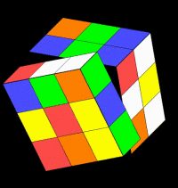
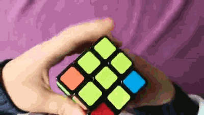
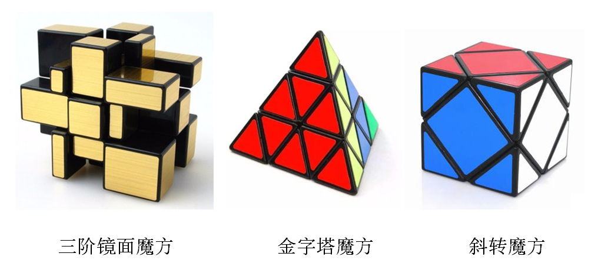
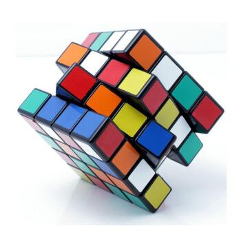

关于小学和初中数学，我曾经听说过一句话：“得几何者得天下”！仔细想一想，这句话其实是有一定道理的。因为小学和初中数学中最重要的两块内容，一个是数与代数，一个就是图形与几何。
前者，家长们都比较重视，数字、计算，都是从小就教起！而后者，图形与几何，一方面大家都不是那么重视，另一方面，想抓也常常感觉无从下手！几何能力的不足也因此成为短板，成为孩子今后数学成绩拉开差距的关键。
几何的基础是空间想象能力，而玩魔方，是培养和增强孩子空间思维能力的重要手段！

我本人小时候也接触过魔方，但是因为没人指点，玩着玩着没有进展，就放弃了。后来等有了孩子，儿子龙龙5、6岁的时候，看到其他小朋友在玩，就买了一个给他玩。
小孩很难独自看视频学魔方
小朋友对玩具都是很有好奇心的，但是，如果玩几天没什么成就或进步，也很容易放弃，就像我自己小时候那样。
为了培养儿子的兴趣，我在网上找到一些魔方的视频教程给孩子看，记得当时还比较了好几种教程，专门购买了一位魔方高手的课程。

但是，孩子看下来，效果不大好。
大家知道，视频其实只是连续的一串平面图像，我们看视频的时候，要在大脑中把它组合成三维空间的内容。尤其是讲解魔方的视频，演示着一个个的小立方体，在空间如何转来转去的。
这对一个人的空间感、立体思维是有很高要求的。许多成年人都不一定能看懂，更何况小孩子，他们的空间感、立体思维还很弱，还处在启蒙成长阶段，让孩子看这种视频是有点太为难他了。
另一方面，解魔方的一些步骤比较复杂，公式很长，看视频学习需要一边看、一边尝试，孩子的注意力和耐心都还不够。
就这样，龙龙看了几次视频，就没了兴趣，平时也很难主动去玩。无奈之下，我只好自己先看、先学，然后再慢慢教他。
教小孩学魔方，需要时间和耐心
我最开始学的是标准三阶魔方的基础解法，共有七步。头几步还相对简单，而后面的内容就比较复杂了，我也是断断续续花了近2周时间才全部学会。 而完全教会大班6岁的龙龙，则花了近3个月。说起来，孩子对于新东西都学得很快，但是记忆不深刻。解魔方开始的几个步骤比较简单，他几次就学会了，但是过了几天，再学后面的内容，就容易和前面的内容搞混。
同时，小孩的注意力也是有限的，玩了几天，孩子就可能被其他新的东西吸引。这个时候，作为家长，一定不能着急，千万不要抱着“教”孩子的想法让孩子继续学。如果那样，常常不仅学习的效果不好，而且还会慢慢消磨掉孩子的兴趣。
一般这种情况，我会让孩子休息几天，等那天孩子状态比较好、比较放松，再找机会提议和他一起玩“魔方”的游戏。
怎么让孩子主动练习还能提高兴趣？
魔方是一个人的游戏，需要自己刻意的反复练习，但是对于小孩来说，尤其是龙龙学到的几步又不足以解开全部魔方时，要求他自己反复练习其实很难，很不容易。那么，怎么样能让孩子主动去玩魔方、去练习呢？
为了更好的培养兴趣，让这种练习有趣一些，我想到一个“组队解魔方”的亲子游戏：每次将魔方完全打乱后，让龙龙先玩他知道的几个步骤，然后，我再接着玩后面的步骤，直到整个魔方六面全部复原。
孩子很喜欢玩这种游戏，当一个魔方完全复原后，一方面他也有很大成就感，同时他也很喜欢这种合作、陪伴的感觉。在后来的学习和练习过程中，我们就经常一起玩这种游戏，等到他掌握了全部步骤，有时候我也会玩前面的步骤，然后让他接着玩后面的步骤。
上面是我想到的办法，大家也可以想想其他的办法。这其中，关键是“游戏”和“陪伴”，就是父母不能功利心太强，要耐心地陪孩子玩，就算孩子经常出错、经常没耐心，大人都需要陪伴和鼓励他，并适时的帮助他。
这样的游戏玩过一阵后，我明显感到他对魔方的兴趣提高了，有好几次看到他自己一个人在那里练习，有时候我们要出门，他都会主动要求带魔方在路上玩，先让我打乱，然后自己玩，玩不下去了再让我接着完成。
就这样，随着龙龙不断练习，他学到的方法都慢慢掌握，这时候我再给他增加后面的一些步骤。等到他完全能独立复原三阶魔方，差不多花了三个月的时间。
同时，更重要的是，他对魔方的兴趣越来越大。随后的日子，我们又先后学会了三阶镜面魔方和金字塔、斜转等异形魔方等。

忘记不要紧，最重要的是“玩”的过程
等孩子上了小学，一年级各种不适应，忙得一塌糊涂，完全没有时间和心思玩魔方了。等孩子终于慢慢学习生活从容些，已经到了三年级！ 有一天，儿子翻出玩具箱里的魔方，发现学过的玩法已经不记得了！
但是这一次，前后不到两周，龙龙就完全重新学会。其中一些简单的步骤，和他一说，他动动手，就马上“噢，我想起来啦！”，至于难一点的步骤，重新学习的过程，也明显感觉其实是唤醒他记忆的过程，有些记忆是手法的动作唤醒的，很多魔友称这个为“肌肉记忆”。
现在，龙龙除了把以前学过的魔方都重新学会外，又增加了四阶魔方！

【这里解释下，平时大家玩得最多的是三阶魔方，就是每个面有3X3的小块，而四阶魔方要比三阶复杂很多，它的每个面试4X4个小块。】
到目前为止，我们学得都是这些魔方的基础解法，暂时不追求玩得速度，也就没有去学速拧（快速复原魔方的玩法）方法。而龙龙对魔方的兴趣也一直保持着！
在他这个忘记后重新学习的过程中，我也逐渐明白，对于发育成长期的儿童来说，魔方最重要的就是“玩”，而不是“学”。
“玩”魔方对于孩子的好处
既然您忍受我的啰嗦看到了这里，最后我想说说小孩玩魔方的好处，这些都是我自己以及观察龙龙玩后亲身体会的好处。
1）首先，正如我在本文开始提到的，玩魔方可以培养空间想象能力。这个其实是魔方被发明出来的初衷，1974年匈牙利的厄尔诺·鲁比克教授发明魔方，就是希望找到一种帮助学生增强空间思维能力的教学工具。
这个我本人深有体会，尤其是在学习三阶镜面魔方的时候体会特别深。我本人是理工男，平时就特别喜欢研究地图，自认为空间想象力还不错，可是在三阶标准魔方玩得挺熟的情况下，初次接触三阶镜面时也懵了好些天。其实三阶镜面魔方和三阶标准魔方的玩法完全一样，唯一的差异是：三阶镜面魔方是按照块的高低大小来分辨，而标准魔方是通过颜色来区分不同的块。也就是说，三阶镜面魔方对一个人的空间想象力要求更高。
打乱的三阶镜面魔方
复原后的三阶镜面魔方
对于孩子来说，通过玩魔方锻炼出优秀的空间感，今后在学习数学课程中空间与几何相关的内容时，会非常有帮助。顺便说一句，一些方向感差、空间想象力不足的成年人，也可以通过玩魔方改善。
2）玩魔方可以充分锻炼孩子手指的灵活性，刺激两侧大脑的智力发育。曾经看到一个理论，小孩手指持续的锻炼能够刺激脑部的发育，尤其是魔方这种需要手、眼、脑相互配合的游戏。类似的游戏还有乐高积木，当然乐高更费钱也占空间！
3）玩魔方需要记忆一些常用的旋转公式，这个记忆公式、同时观察不同情况使用不同公式的过程，可以训练孩子的逻辑思维能力。
4）玩魔方虽然只是一种游戏，但是有一定难度，要玩好，持续的锻炼对孩子的耐心、毅力和专注力也有帮助。
当然，其他还有一些现实的好处，比如魔方便宜、省地方、容易随身携带等等。
总之，玩魔方是一种简单方便、好玩益智的活动，非常推荐大家让孩子尝试尝试。同时，想要孩子喜欢玩、坚持玩、玩出点名堂，也需要家长放下功利心，多多陪伴、引导和鼓励。
Tkinter根窗口设置小技巧：程序启动最大化和程序窗口图标设置
介绍Tkinter程序根窗口的设置方法，同时介绍程序启动时窗口最大化和程序窗口图标设置的小技巧。
read moreHello World，编写一个Tkinter程序需要哪些基本步骤？
通过Hello World程序介绍编写Tkinter程序的四个基本步骤：创建并设置根窗口、选择要显示的组件并进行对应设置、组件的布局管理和给组件编写交互功能。
read more孩子运动，是选篮球还是足球？？
篮球和足球都是团体对抗的球类运动，训练方式也相似，对于提高身体素质，培养孩子的对抗意识和团队合作意识很有帮助。但是因为运动形式的差别，篮球更有利于身体的全面锻炼，对孩子长身高有帮助，同时也有利于脑部发育。
read more2020年温针灸足三里筑基记录
2018年的温针灸足三里百次筑基，对我的身体有很大帮助。今年准备再次温针灸足三里，希望经过三伏天，重新百次筑基。6月1号开始第一次，特记录如下。
read morePython自带的GUI库Tkinter是否值得学习？
Python语言可以用在很多方面，网站开发、数据分析、运营维护、游戏开发等等，那么桌面应用程序GUI呢？其实Python标准库里自带Tkinter就是干这个的。相比PyQT、wxPython等等，Tkinter有哪些优势和不足，是否值得学呢？
read more站桩记录2：调身、调气和调心
站桩的过程实际上首先就是“调身”的过程。“下紧上松”，从双脚开始，到膝盖，再到裆部的放松。上半身则要求头部顶悬、下颌微内收；松肩沉肘，双掌环抱。
read more站桩记录1：开始练习站桩
最近看了一些关于站桩的资料，同时也接触了一些师傅，请教了养生的问题，大家都比较推崇站桩。于是决定试试。
read more创意与验证：如何获得好的创意?——Udacity课程《产品设计》学习笔记2
要想有一个好的创业点子，一定要对所做的事情有激情。千万不要只是为了创业而去创业。我们之所以要创业，是因为要解决一个问题，一个会让我们日夜寻思的问题。
read moreBreeze，让无车者也能成为Uber/Lyft司机
对于Uber和Lyft这样的打车平台来说，随着对出行市场的占有率越来越高，他们面对的问题和别的行业有所不同。对于他们来说，获取用户非常简单，甚至太简单了，导致现在他们常常面临的问题是：用户太多，而司机太少。
read more